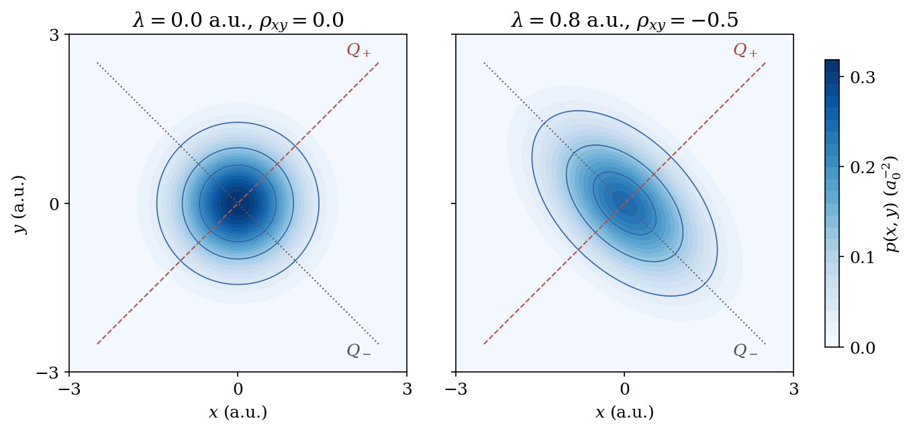

Quasiteilchen und Korrelation#
In einem System aus mehreren Teilchen hängt die Kraft auf ein Teilchen im Allgemeinen auch von den Positionen der anderen Teilchen ab. In der klassischen Beschreibung führt dies zu gekoppelten Bewegungsgleichungen. Im quantenmechanischen Fall führt die Kopplung ebenfalls dazu, dass die (stationäre) Schrödinger-Gleichung nicht mehr in unabhängige Gleichungen für jedes Teilchen zerfällt. In manchen Fällen lassen sich jedoch neue, kollektive Freiheitsgrade finden, die das Problem wieder entkoppeln. Dies ist eine fundamentale Idee, die die gesamte moderne Quantentheorie der Materie durchzieht und zur Beschreibung von Quasiteilchen führt.
Wir untersuchen diese Frage zunächst an zwei gekoppelten harmonischen Oszillatoren. Ihre Normalschwingungen führen uns zum Begriff des Quasiteilchens. Die elementaren Anregungen in diesem System gehören zu kollektiven Bewegungen beider Oszillatoren. Anschließend definieren wir die Korrelation und zeigen am Grundzustand desselben Systems, wie die Auslenkungen der ursprünglichen Oszillatoren statistisch voneinander abhängen.
Wir setzen die Lösung des harmonischen Oszillators voraus und verwenden atomare Einheiten, insbesondere \(\hbar=1\).
Was bedeutet die Separation eines Quantensystems?#
Betrachten wir einen Hamiltonoperator, der sich in zwei voneinander unabhängige Beiträge zerlegen lässt:
Jeder Operator wirkt nur auf seine eigenen Koordinaten. Wenn
folgt durch Einsetzen unmittelbar
Die Eigenfunktionen können als Produkte gewählt werden, und die zugehörigen Energien addieren sich. Wir nehmen dabei an, dass auch der zugängliche Koordinatenbereich und die Randbedingungen diese Zerlegung erlauben.
Eine beliebige Überlagerung solcher Produkte ist dann ebenfalls ein möglicher Zustand des Systems, der aber im Allgemeinen nicht mehr als Produkt darstellbar ist. Die Separation ist zunächst eine Aussage über den Hamiltonoperator und die Möglichkeit, seine Eigenzustände aus einfacheren Teilproblemen zu konstruieren.
Zwei gekoppelte harmonische Oszillatoren#
Wir betrachten zwei eindimensionale Auslenkungen \(x\) und \(y\) mit gleicher Masse \(m\) und gleicher ungekoppelter Kreisfrequenz \(\omega_0\):
Der Term \(\lambda xy\) ist bilinear in \(x\) und \(y\). Die Kopplungskonstante \(\lambda\) hat dieselbe Dimension wie eine Federkonstante. Die zugehörigen klassischen Kräfte lauten
Damit beeinflusst die Auslenkung des einen Oszillators direkt die Kraft auf den anderen. In den Koordinaten \(x,y\) ist der Hamiltonoperator für \(\lambda\ne0\) keine Summe zweier unabhängiger Einteilchenoperatoren! Das Problem sieht auf den ersten Blick kompliziert aus, aber es lässt sich durch eine geeignete Koordinatentransformation erheblich vereinfachen.
Einführung der Normalkoordinaten#
Statt mit den Koordinaten der einzelnen Oszillatoren zu arbeiten, können wir auch mit geeigneten Linearkombinationen arbeiten, die die kollektive Bewegung der Oszillatoren beschreiben. Wir definieren deshalb
Die Umkehrung lautet
Der Faktor \(1/\sqrt2\) macht die Transformation orthogonal. Insbesondere bleiben das quadratische Längenmaß und das Flächenelement bei dieser Transformation erhalten:
Für den Kopplungsterm erhalten wir in den kollektiven Koordinaten
Damit wird die potentielle Energie zu
Es tritt kein Produkt \(Q_+Q_-\) mehr auf! Für die Separation des gesamten Hamiltonoperators müssen wir jedoch auch die kinetische Energie transformieren.
Transformation der kinetischen Energie#
f Die Anwendung der Kettenregel liefert für die Ableitungen nach den ursprünglichen Koordinaten die folgenden Ausdrücke:
Beim Quadrieren entstehen in beiden Ausdrücken gemischte Ableitungen, aber mit entgegengesetztem Vorzeichen. In der Summe heben sie sich auf, so dass der Laplace-Operator in den neuen Koordinaten weiterhin die gleiche diagonale Form behält:
Wir erhalten somit zwei unabhängige harmonische Oszillatoren:
mit den Normalfrequenzen
Die Stabilitätsbedingung \(|\lambda|<m\omega_0^2\) stellt sicher, dass beide Frequenzen reell und positiv sind.
Wir sehen also, dass die Transformation zu den Normalkoordinaten die beiden Oszillatoren entkoppelt und das System in zwei unabhängige harmonische Oszillatoren zerlegt!
Eigenfunktionen, Energien und Bewegungsmuster#
Aus den bekannten Oszillatorlösungen folgt
und
Die beiden Normalmoden beschreiben anschauliche Bewegungsmuster. Bei einer reinen \(Q_+\)-Bewegung ist \(Q_-=0\), also \(x=y\): Beide Oszillatoren bewegen sich gleichsinnig. Bei einer reinen \(Q_-\)-Bewegung ist \(Q_+=0\), also \(x=-y\): Sie bewegen sich gegensinnig.
Für \(\lambda>0\) ist die gleichsinnige Mode steifer, \(\Omega_+>\Omega_-\). Bei negativem \(\lambda\) kehrt sich die Reihenfolge um.
Jede Normalmode enthält die Auslenkungen beider ursprünglicher Oszillatoren. Die Entkopplung der Moden bedeutet daher nicht, dass die ursprünglichen Teilchen unabhängig voneinander sind.
Vom Schwingungsquant zum Quasiteilchen#
Erhöhen wir \(n_+\) um eins, steigt die Energie um \(\Omega_+\). Entsprechend kostet ein zusätzliches Quant der anderen Mode die Energie \(\Omega_-\). Ein solches Quant gehört zu einem kollektiven Bewegungsmuster, nicht zu einem einzelnen der ursprünglichen Oszillatoren.
Wir können die Energie deshalb auch in der Form
lesen: Über dem Grundzustand befinden sich \(n_+\) Anregungsquanten der \(Q_+\)-Mode und \(n_-\) Anregungsquanten der \(Q_-\)-Mode. Die Zahlen \(n_\pm\) sind ihre Besetzungszahlen. Jedes zusätzliche Quant trägt eine feste Energie bei, unabhängig davon, wie viele Quanten bereits vorhanden sind.
Dies ist ein einfaches Beispiel für das Quasiteilchenbild. Wir beschreiben die Anregungsquanten der kollektiven Moden wie unabhängige Teilchen, die dem System hinzugefügt werden. Ein solches Quasiteilchen ist kein zusätzliches materielles Teilchen, sondern eine (kollektive) Anregung des Systems aus beiden Oszillatoren. Für den hier betrachteten harmonischen Hamiltonoperator ist diese Beschreibung exakt.
Die Unabhängigkeit der Normalmoden bedeutet jedoch nicht, dass die ursprünglichen Auslenkungen \(x\) und \(y\) statistisch unabhängig sind. Um diesen Unterschied präzise zu beschreiben, führen wir nun den Begriff der Korrelation ein.
Korrelation und statistische Unabhängigkeit#
Für einen normierten Zustand \(\Psi(x,y)\) ist
die gemeinsame Wahrscheinlichkeitsdichte der beiden Auslenkungen. Die Dichte für nur eine Auslenkung erhalten wir, indem wir über die andere integrieren:
Diese Funktionen heißen Marginaldichten. Die beiden Auslenkungen sind statistisch unabhängig, wenn
Andernfalls sprechen wir hier von statistischer Korrelation: Die Kenntnis der einen Auslenkung verändert die Wahrscheinlichkeitsverteilung der anderen. Dies zeigt die bedingte Dichte
die bei Unabhängigkeit gleich \(p_y(y)\) ist und somit nicht von \(x\) abhängt.
Ein Maß für die gemeinsamen linearen Schwankungen ist die Kovarianz. Mit \(\langle f\rangle=\iint f(x,y)p(x,y)\,dx\,dy\) definieren wir
Die Varianzen sind \(\sigma_x^2=\langle x^2\rangle-\langle x\rangle^2\) und entsprechend \(\sigma_y^2\). Für endliche, von null verschiedene Varianzen lautet der dimensionslose Korrelationskoeffizient
Ein positives Vorzeichen beschreibt bevorzugt gleichsinnige, ein negatives bevorzugt gegensinnige Abweichungen von den Mittelwerten. Statistische Unabhängigkeit führt zu \(C_{xy}=\rho_{xy}=0\). Die Umkehrung gilt im Allgemeinen nicht: Ein verschwindender Korrelationskoeffizient schließt andere Formen statistischer Abhängigkeit nicht aus. Für die gemeinsame Gaußverteilung des folgenden Oszillatorgrundzustands ist \(\rho_{xy}=0\) dagegen gleichbedeutend mit Unabhängigkeit.
Korrelation im Grundzustand#
Der normierte Grundzustand ist in den Normalkoordinaten ein Produkt zweier Gaußfunktionen:
In den ursprünglichen Koordinaten lautet derselbe Zustand
wobei \(N\) der oben angegebene Normierungsfaktor ist. Für \(\lambda\ne0\) bleibt im Exponenten ein \(xy\)-Term übrig. Deshalb lässt sich die Wellenfunktion nicht als \(f(x)g(y)\) schreiben. Auch die gemeinsame Ortsdichte \(p(x,y)=|\Psi_0(x,y)|^2\) faktorisiert hier nicht in ihre Marginaldichten. Die Auslenkungen sind demnach gemäß der obigen Definition statistisch korreliert!
Diese Korrelation lässt sich berechnen. Die Grundzustandsdichte ist unter der gemeinsamen Umkehrung beider Auslenkungen, \((x,y)\mapsto(-x,-y)\), invariant. Da die einzelnen Auslenkungen dabei ihr Vorzeichen wechseln, verschwinden ihre Mittelwerte: \(\langle x\rangle=\langle y\rangle=0\). Mit
erhalten wir
Mit den verschwindenden Mittelwerten vereinfacht sich der oben definierte Korrelationskoeffizient zu
Für positive Kopplung ist \(\rho_{xy}<0\): Positive Auslenkungen des einen Oszillators gehen bevorzugt mit negativen Auslenkungen des anderen einher. Für \(\lambda=0\) erhalten wir zwei unabhängige Gaußverteilungen und \(\rho_{xy}=0\).
Veranschaulichung der gemeinsamen Ortsdichte#
Für die folgende Abbildung wählen wir \(m=1\) und \(\omega_0=1\) in atomaren Einheiten. Die charakteristische Oszillatorlänge ist damit
Wir vergleichen die Kopplungen \(\lambda=0\) und \(\lambda=0.8\) a.u. Die dimensionslose relative Kopplungsstärke
hat für diese Parameter dieselben Zahlenwerte. Die Achsen zeigen direkt \(x\) und \(y\) in atomaren Einheiten; dargestellt ist die gemeinsame Dichte \(p(x,y)=|\Psi_0(x,y)|^2\) bezüglich \(dx\,dy\), deren Einheit \(a_0^{-2}\) ist. Beide Bilder verwenden dieselbe Farbskala. Für \(\kappa=0.8\) gilt \(\Omega_+/\Omega_-=3\) und damit \(\rho_{xy}=-1/2\). Die Verteilung ist entlang der weicheren, gegensinnigen Mode ausgedehnt. In den Koordinaten \(Q_+,Q_-\) ist dieselbe Verteilung weiterhin ein Produkt.

Die Normalmoden liefern somit eine exakte Beschreibung durch unabhängige Anregungsquanten, während die ursprünglichen Auslenkungen im Grundzustand für \(\lambda\ne0\) korreliert sind. Im folgenden Kapitel über das Heliumatom untersuchen wir, wie weit uns eine geeignete Koordinatenwahl bei zwei wechselwirkenden Elektronen führt und wo Näherungen nötig werden.
Aufgaben zur Vertiefung#
1. Kopplung und Korrelation. Berechnen Sie für \(m=1\), \(\omega_0=1\) und \(\lambda=0.6\) (jeweils in atomaren Einheiten) die beiden Normalfrequenzen, die Grundzustandsenergie und den Korrelationskoeffizienten \(\rho_{xy}\). Welche Mode ist weicher? Wie ändern sich die Ergebnisse beim Vorzeichenwechsel von \(\lambda\)?
2. Zwei gleiche Massen. Führen Sie für dieselben beiden Oszillatoren die Schwerpunktkoordinate \(R=(x+y)/2\) und die Relativkoordinate \(r=x-y\) ein. Schreiben Sie die kinetische Energie als
und leiten Sie für \(m_1=m_2=m\) die Werte der Gesamtmasse \(M\) und der reduzierten Masse \(\mu\) her. Zeigen Sie, dass diese Koordinaten mit den Normalkoordinaten durch \(Q_+=\sqrt2 R\) und \(Q_-=r/\sqrt2\) zusammenhängen. Erklären Sie, warum in der einen Darstellung zwei gleiche Massen \(m\), in der anderen die Massen \(M\) und \(\mu\) auftreten.
Ergebnisse und Lösungshinweise#
Zu 1. Die Normalfrequenzen sind \(\Omega_+=\sqrt{1.6}\approx1.2649\) und \(\Omega_-=\sqrt{0.4}\approx0.6325\) in atomaren Einheiten. Daraus folgen die Grundzustandsenergie \(E_0=3/\sqrt{10}\approx0.9487\) Hartree und der dimensionslose Korrelationskoeffizient \(\rho_{xy}=-1/3\). Die gegensinnige Mode ist weicher. Beim Vorzeichenwechsel tauschen die Frequenzen ihre Rollen, die Grundzustandsenergie bleibt gleich und \(\rho_{xy}\) wechselt das Vorzeichen.
Zu 2. \(M=2m\) und \(\mu=m/2\). Aus den Skalierungen folgt \(\partial_R^2=2\partial_{Q_+}^2\) und \(\partial_r^2=\tfrac12\partial_{Q_-}^2\). Damit wird die kinetische Energie in beiden Darstellungen identisch. Die unterschiedlichen Massenfaktoren spiegeln die unterschiedliche Skalierung der Koordinaten wider.